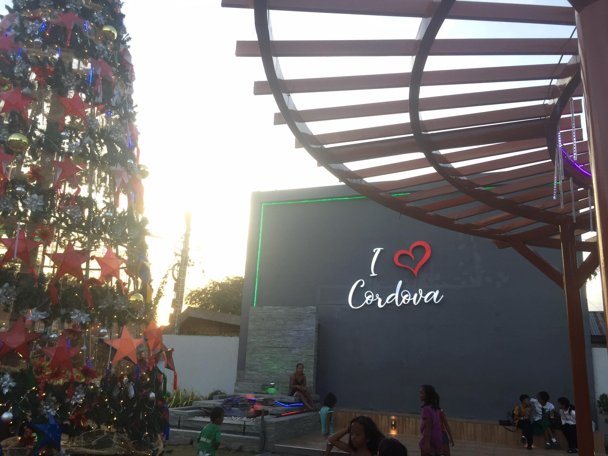

today I'm excited to share with you the enchanting story of Cordova's "10,000 Roses." Nestled on the shores of this beautiful municipality, the 10,000 Roses Cafe is a unique and breathtaking attraction that has captured the hearts of locals and visitors alike. Imagine, if you will, a garden illuminated by 10,000 white LED roses, gently swaying in the evening breeze. This magical sight is not just a display of beauty; it's a symbol of Cordova's creativity and innovation. The 10,000 Roses Cafe has become a beacon of charm and tranquility, drawing people from far and wide to experience its ethereal ambiance. The concept behind this floral wonderland is simple yet profound – to create a space where nature, technology, and art converge to offer a truly enchanting experience. As you wander through the garden, each radiant rose tells a story. It's a story of the municipality's commitment to embracing the modern while cherishing its natural beauty. The roses, illuminated against the backdrop of the sea, create a spectacle that is both calming and awe-inspiring. This attraction isn't just about aesthetics; it's also a testament to Cordova's dedication to tourism and community development.
today I'm delighted to share with you the charm of Entoy's Bakasihan. Nestled in our community, this eatery is more than just a place to savor delicious food; it's a culinary journey that captures the essence of our local flavors. Entoy's Bakasihan is a haven for those seeking authentic and mouthwatering local delicacies. From the moment you step through its doors, you're welcomed by the aroma of grilled seafood and the warmth of traditional Filipino hospitality. What makes Entoy's Bakasihan special is its dedication to showcasing the best of our local culinary heritage. The menu is a treasure trove of flavors, featuring fresh catches from our seas expertly prepared to tantalize your taste buds. Each dish tells a story of our coastal community and the rich maritime traditions we hold dear. Moreover, Entoy's Bakasihan isn't just about the food; it's about creating a space where friends and families can come together to share laughter, stories, and, of course, fantastic meals. It's a place where the simple act of dining becomes a celebration of our community bonds. As you savor the grilled delights and specialties at Entoy's Bakasihan, remember that you're not just enjoying a meal – you're partaking in a culinary experience that embodies the heart and soul of our community. So, whether you're a local or a visitor, I encourage you to indulge in the flavors of Entoy's Bakasihan and embrace the taste of our vibrant community. Thank you.
I stand before you to illuminate the vibrant canvas of Cordova's environment—a tapestry woven with the hues of nature's beauty, resilience, and the harmony shared between its people and the natural world. Cordova, a place where land and sea embrace in an eternal dance, embodies a sanctuary of ecological diversity. Its coastal landscape, adorned with mangrove forests and teeming marine life, is not just a picturesque sight but a testament to the interconnectedness of life. The heart of Cordova's environment lies within its mangroves—the guardians of our shores. These lush green havens serve as protective shields, shielding our coasts from storms and nurturing a rich tapestry of life within their roots. They aren't just trees; they are the lifelines that sustain our ecosystems, providing homes to countless species and safeguarding our shores against the fury of nature. The marine world surrounding Cordova isn't merely a vast expanse of water; it's a thriving ecosystem, a source of livelihood, and a cradle of biodiversity. From the colorful corals to the diverse fish species that dance beneath the waves, this underwater realm is an intricate web of life that sustains our fishermen and sustains our community. Yet, this paradise is not without its challenges. Rapid development, urbanization, and the pressures of progress threaten the sanctity of Cordova’s environment. Pollution, overfishing, and habitat destruction loom as shadows upon this pristine canvas. However, the people of Cordova are not passive spectators in this narrative. They are stewards of their environment, champions of conservation, and advocates for sustainable practices. Community-led initiatives, coastal clean-ups, mangrove rehabilitation programs, and sustainable fishing practices stand as testament to our commitment to safeguarding our natural heritage.
